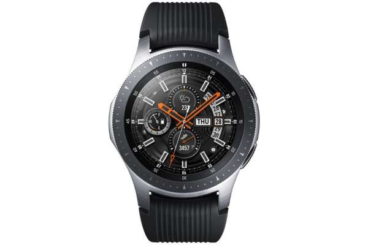

Q1.いつも時間を確認するときはスマホで確認する
Q2.現在も家庭受話器を使っている
Q3.音楽を聴くのは好きだ
Q4.健康には気を遣うようにしている
Q5.定期的にランニングをする

金属感のあるベゼル部分とバンドのブラックカラーが特徴的なスマートウォッチです。電話やアラームなどの機能を切り替えはベゼルを回すだけという簡単操作もポイントです。音楽は4GBまで保存でき、通勤時や運動中にもワイヤレスイヤホンで音楽を楽しめます。バッテリーは3日前後、省電力モードであれば5日ほど持つのも魅力的です。スマートウォッチの中では屈指のバッデリー消費が遅いので、忙しい時期にスマホの充電が出来なくても、この時計があれば困りません。
AndroidやiOSを搭載したスマートフォンと自動で同期して、メールやアプリの通知を手首で確認できます。健康管理機能では歩数や距離、消費カロリーなどの情報を表示可能。健康管理アプリ「Google Fit」と連動すれば、目標の達成状況をスマートフォン上で確認できます。また、「iTunes」や「Google play」などの音楽配信アプリの操作ができ、トレーニング中にスマホを使わずに音楽の再生や曲送りなどができます。IOSやAndoroidに対応しているので、あなたがどちらのユーザーでも、自分の持つ音楽をトレーニングしながらでも楽しめ、制限なしに自分だけの世界を体感できます。
WatchOSは、iPhoneやMacを販売しているAppleが開発した、Apple Watch用のOSです。iPhoneへの着信やメッセージの確認、Siriの音声アシスタントなども使えます。基本的にはiPhoneやiPadのiOSとスムーズな連携ができ、ヘルスケアアプリとのデータ連携の他に、アプリのプッシュ通知やメッセージの内容を手首で確認することが可能です。あなたがAppleユーザであるのならば、日常的に自己管理がしやすくなるのでおすすめできます
ファッションに合わせやすいシンプルなシルバーカラーの全面ディスプレイタイプのスマートウォッチです。健康状態を管理するアプリがあることで有名で、体調の記録や予測をしてくれます。ほかにも、眠りの深さや消費カロリーなどの記録、ヨガやランニングなどのデータをリアルタイムで通知可能。定期的なワークアウトの管理も簡単に行えます。水深50mの耐水仕様で、プールに通っている方にもおすすめできます。スポーツが好きそうなあなたにはおすすめできるかもしれません